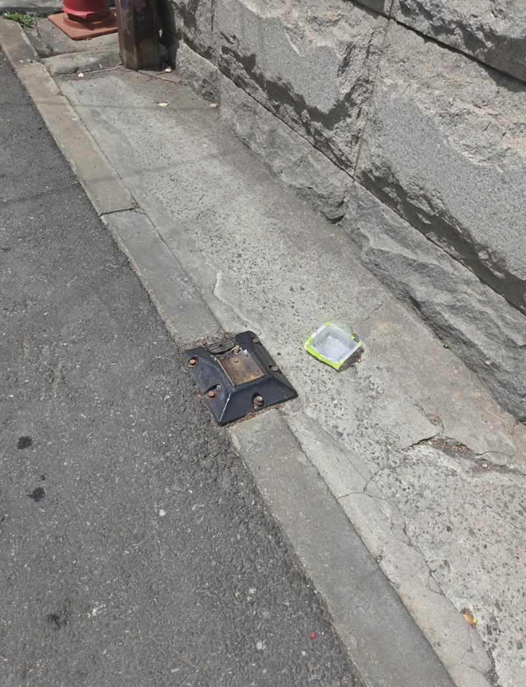
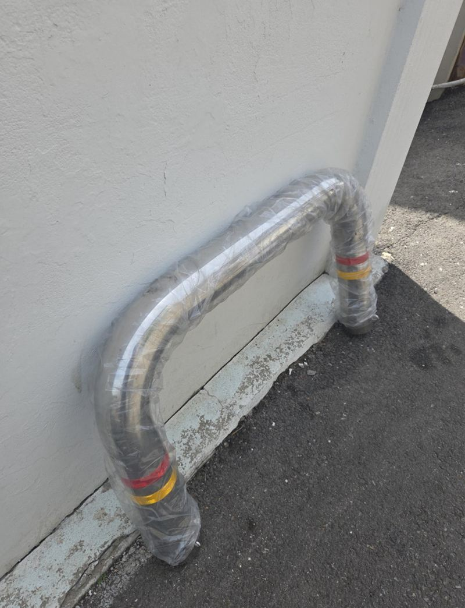
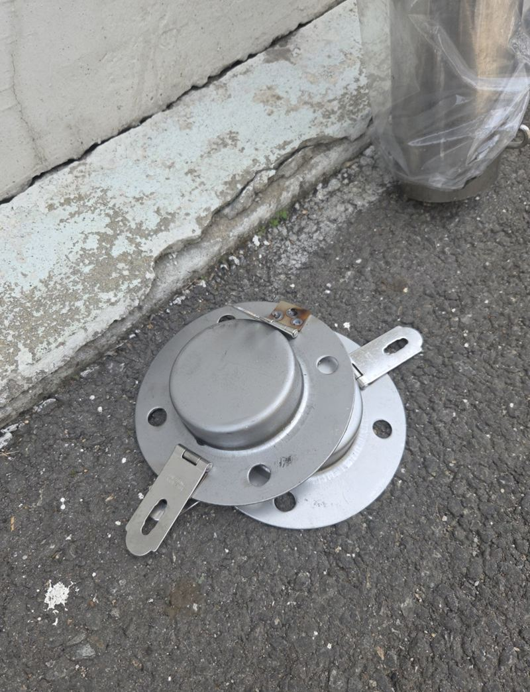
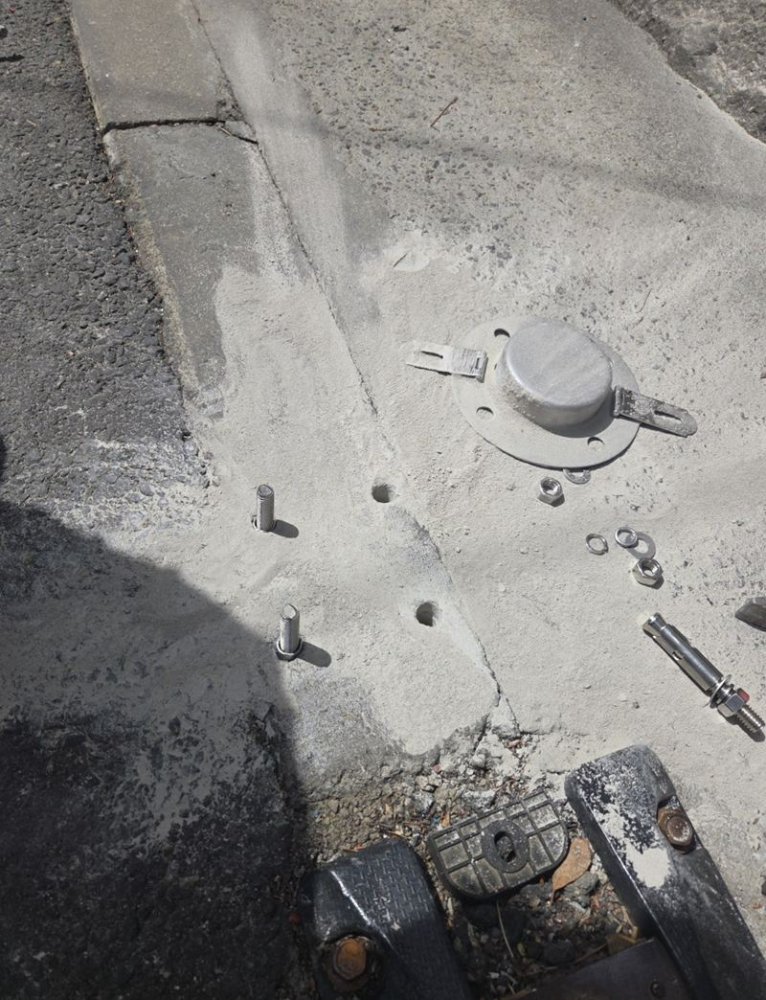
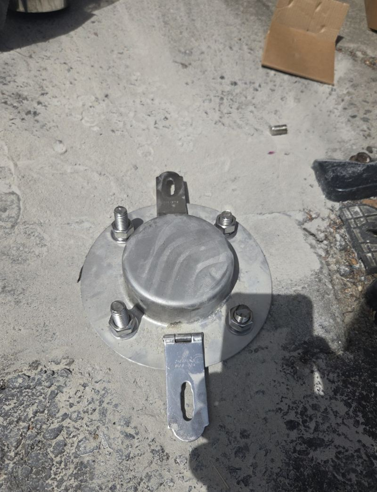
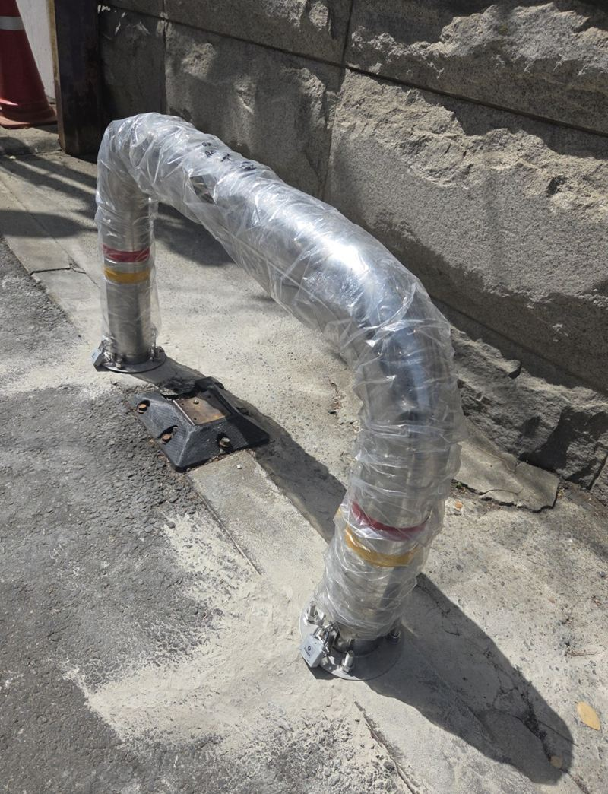

용산 스텐 U자 볼라드 한두 개 설치 작업
← 밀어서 전후 비교 →
건물 차고지 바로 앞에 남의 차가 자꾸 서서, 정작 건물 차가 드나들지 못하던 곳이에요. 그렇다고 아예 막아 버리면 이사나 짐 옮길 때 곤란하다고 하셨어요. 그래서 평소엔 단단히 서 있고, 필요할 땐 자물쇠를 풀어 뺄 수 있는 스텐 U자 볼라드를 맞춰 달았어요.
| 현장 | 서울 용산 한강대로 인근 건물 차고지 앞 |
|---|---|
| 문제 | 차고지 앞 무단 주차로 입출차 불편 |
| 설치 | 스텐 U자 볼라드, 앙카 고정 + 자물쇠 탈부착 |
| 한 일 | 위치 표시 → 맞춤 제작 → 바닥 타공 → 앙카·브라켓 고정 → 볼라드 결합 |
어디에 세워야 막히고, 어디는 비워야 할까
차고지 앞을 다 막으면 건물 차도 못 들어가요. 차가 드나드는 흐름은 방해하지 않으면서, 남의 차가 바퀴를 들이밀 수 없는 지점을 골라 표시했어요. 이 위치 선정이 볼라드 설치에서 가장 먼저 할 일이에요.


뺄 수 있는 볼라드, 이렇게 달아요
맞춤 제작
차량 폭과 진입 방향을 보고 높이와 다리 간격을 정해 만들었어요. 브라켓과 앙카 부품도 함께 준비했어요.
바닥 타공
표시한 자리에 정확히 구멍을 냈어요. 앙카 위치가 조금만 어긋나도 나중에 끼우고 빼기가 뻑뻑해져요.


앙카 고정과 결합
브라켓을 앙카로 단단히 박고 볼라드를 끼운 뒤 자물쇠로 잠갔어요. 흔들림이 없는지, 풀었다 다시 끼울 때 부드러운지 확인했어요.


한두 개만 달아도 되나요?
네, 이 현장도 차고지 앞 몇 자리만 막으면 됐어요. 볼라드는 많이 세운다고 좋은 게 아니라, 차가 들어올 틈을 정확히 막는 게 중요해요. 개수가 적을수록 자리 선정이 더 중요해져요.
| 방식 | 특징 |
|---|---|
| 매립 고정형 | 가장 튼튼, 빼기 어려움 |
| 앙카 탈부착형(이번 현장) | 평소엔 고정, 필요할 때 분리 |
| 이동식 받침형 | 설치가 간단, 밀릴 수 있음 |
이럴 때 탈부착형 볼라드가 좋아요
- 가끔 큰 차가 들어와야 해요이사·납품 날만 빼고 평소엔 막아 둘 수 있어요.
- 주차 분쟁이 잦아요말로 막기 어려운 자리를 구조물로 정리해요.
- 임대 건물이에요매립보다 원상복구가 쉬워 건물주와 협의가 수월해요.
U자 볼라드 질문
볼라드를 뺀 자리는 걸려 넘어지지 않나요?
바닥 브라켓은 낮게 남아요. 눈에 잘 띄게 표시해 두시면 좋아요.
스텐 말고 다른 재질도 있나요?
도색 철재나 고무 볼라드도 있어요. 스텐은 녹이 덜 슬어 바깥에 많이 써요.
자물쇠 열쇠를 잃어버리면요?
여분 열쇠를 따로 보관해 두시길 권해요. 분실 시 자물쇠만 교체할 수 있어요.
건물 앞 인도에 세워도 되나요?
사유지가 아닌 공공 보도는 관할 기관 허가가 필요할 수 있어요. 부지 경계를 먼저 확인해 주세요.
문구 스티커도 붙일 수 있나요?
"주차 금지" 같은 안내를 붙이면 효과가 더 좋아요.
설치 후 바로 써도 되나요?
앙카식은 매립처럼 굳는 시간을 기다리지 않아도 돼요.
볼라드 높이는 어떻게 정해요?
차 범퍼가 넘지 못하고 사람 눈에 잘 띄는 높이로 맞춰요.
U자형 말고 일자형도 되나요?
좁은 틈을 막을 땐 일자형이 나을 때도 있어요. 자리를 보고 모양을 골라요.
설치 후 이동식으로 바꿀 수도 있나요?
브라켓은 남겨 두고 볼라드만 다른 형태로 바꾸는 방법도 있어요.
다른 볼라드 현장
막고 싶은 자리 사진과 차가 드나드는 방향을 알려주세요.
전화 상담 010-4517-9872